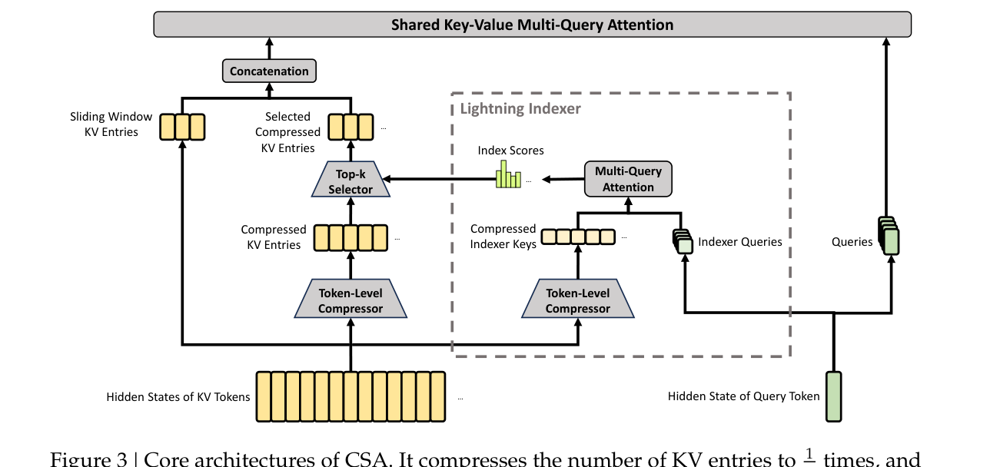
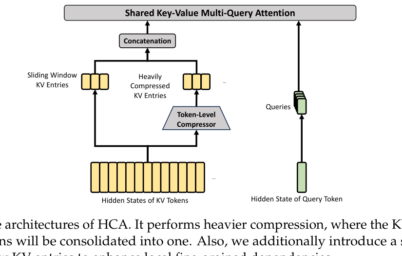

DeepSeek-V4 系列论文解读
Heavily Compressed Attention 与混合配置
对比 HCA 与 CSA，理解粗细压缩的混合策略，以及滑动窗口、RoPE 与 Attention Sink 等工程细节。
HCA 的设计目标
Heavily Compressed Attention（HCA）与 CSA 思路类似，但追求更激进的压缩：
- 使用更大的压缩率 m'（m' ≫ m）。
- 不使用重叠压缩。
- 不采用稀疏选择，而是对所有压缩 KV 条目做稠密注意力。
HCA 适合那些不需要精细 token 级依赖、但希望进一步降低计算和 KV Cache 的层或位置。
HCA 与 CSA 对比
| 特性 | CSA | HCA |
|---|---|---|
| 压缩率 | m（较小） | m'（较大，m' ≫ m） |
| 压缩方式 | 重叠压缩 | 非重叠压缩 |
| 选择策略 | Top-k 稀疏选择（DSA） | 稠密注意力，无稀疏选择 |
| 适用场景 | 需要保留较多上下文细节 | 可以接受更粗粒度依赖 |
| KV Cache / FLOPs | 较低 | 更低 |
HCA 与 CSA 的主要区别是什么？
HCA 使用更大的压缩率、非重叠压缩，并且不做稀疏选择，而是对所有压缩 KV 做稠密注意力。
混合配置
DeepSeek-V4 并非所有层都用同一种注意力，而是交错使用 CSA 和 HCA：
- 一部分层用 CSA，保留更强的 token 选择能力。
- 一部分层用 HCA，最大化效率。
这种混合策略在能力和效率之间取得平衡，是 1M token 场景可行的关键。

CSA
HCA其他工程细节
RMSNorm 归一化
CSA 和 HCA 在核心注意力前，对 query head 和压缩 KV 条目额外做 RMSNorm，避免注意力 logits 爆炸。
Partial RoPE
只在 query、KV 条目和核心注意力输出的最后 64 维应用 Rotary Positional Embedding（RoPE），并给核心注意力输出额外施加位置 -i 的 RoPE，让输出携带相对位置信息。
滑动窗口注意力分支
每个 query token 额外保留最近 n_win 个未压缩 KV 条目，与压缩 KV 一起参与核心注意力。这弥补了压缩导致 query 无法访问同一块内其他 token 的问题，增强局部依赖建模。
Attention Sink
为每个 attention head 引入可学习的 sink logit z'_h，加到 attention 分母上。这样每个 head 的总注意力权重可以不等于 1，甚至可以接近 0，增加建模灵活性。
效率收益
得益于 CSA/HCA 混合、低精度计算和存储，DeepSeek-V4 的注意力模块在 FLOPs 和 KV Cache 上都显著降低：
- KV 条目采用混合精度：RoPE 维度用 BF16，其余维度用 FP8，几乎把 KV Cache 减半。
- Lightning Indexer 内部计算使用 FP4，进一步加速。
模块小结
- HCA 是 CSA 的更重压缩版本，用更大压缩率 + 稠密注意力换取更低开销。
- 混合配置让不同层承担不同的精度和效率角色。
- 滑动窗口、Partial RoPE 和 Attention Sink 是保留局部依赖与位置信息的关键工程细节。